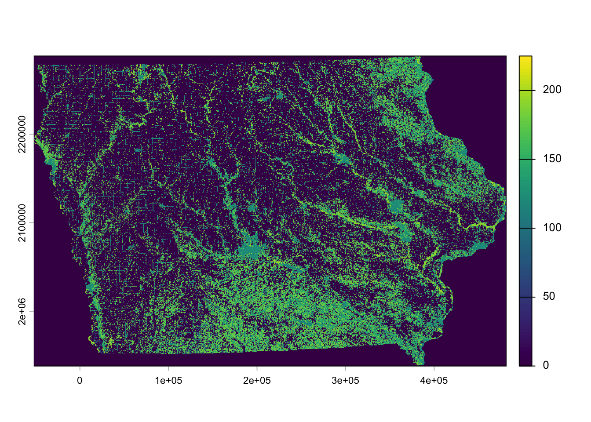

In this chapter, we introduce how to work with raster data in R using the terra package, which has functions to create, read, manipulate, and write raster and vector data.
Raster data is commonly used to represent spatially continuous phenomena by dividing the study region into a grid of equally sized rectangles (referred to as cells or pixels) with the values of the variable of interest.
For many years, the raster package was the standard tool for handling raster data. However, it is now being gradually replaced by terra, which is designed to be faster, more memory-efficient, and easier to use for large datasets. Throughout this chapter, we will primarily use terra for raster operations.
That said, you may still encounter the raster package in older code or in some spatial packages that have not yet fully transitioned to terra. For this reason, we will briefly introduce raster object classes and show how to convert between raster and terra objects.
The good news is that the two packages are quite similar—many functions have the same names and perform similar tasks. By the end of this chapter, you should feel comfortable reading, manipulating, and analyzing raster data using modern tools in R.
10 Cropland Data Layer
In this chapter, we will work with the Cropland Data Layer (CDL), a widely used dataset in agricultural and environmental research.
The CDL is produced annually by the National Agricultural Statistics Service (NASS) of the U.S. Department of Agriculture. It provides geo-referenced, crop-specific land cover data at a spatial resolution of:
30 meters (from 2008 onward), and
56 meters (for earlier years)
The dataset covers most of the contiguous United States and is available from 1997 to the present. Each pixel in the raster represents a specific land cover or crop type (e.g., corn, soybeans, wheat), making it especially useful for studying land use patterns, agricultural production, and environmental change.
A useful tool for exploring CDL data is CropScape, a web-based platform developed by NASS. It allows users to visualize, query, and download CDL data through an interactive map interface.
10.1 Download the CDL data as raster data
The function GetCDLData() allows you to download CDL data for a specific area of interest (AOI) and year. To make a request, you need to specify three key arguments:
aoi: the area you want data for
year: the year of the CDL data
type: how the AOI is defined
Supported AOI types:
The type argument tells the function how to interpret your aoi. The following options are available:
Spatial object (sf or sfc): type = “b”
County (using a 5-digit FIPS code): type = “f”
State (using a 2-digit FIPS code): type = “f”
Bounding box (defined by coordinates): type = “b”
Polygon (defined by three or more coordinates): type = “ps”
Single point (defined by coordinates): type = “p”
In practice, you will most often use either:
an sf object (e.g., county boundaries), or
a FIPS code (for a county or state)
to define your area of interest.
Let’s download the 2023 CDL data for the area covering Obion and Lincoln counties in TN.
pacman::p_load( sf, # vector data operations tidyverse, # data wrangling data.table, # data wrangling tmap, # make maps mapview, # create an interactive map patchwork, # arranging maps tigris, terra, raster, CropScapeR, tidyterra)
# get the sf for all the counties in TNtn_county <-counties(state ="TN", cb =TRUE, progress_bar =FALSE)
Retrieving data for the year 2024
class(tn_county)
[1] "sf" "data.frame"
# get the two counties tn_county_2 <- tn_county %>%filter(NAME %in%c("Obion", "Lincoln"))
We will use the tn_county_2sf object to define our area of interest (AOI). When an sf object is provided as the aoi, the function does not extract data exactly along the county boundaries. Instead, it downloads data for the bounding box that fully contains the sf object. For this reason, we set type = “b”.
In other words, the CDL data you receive will cover a rectangular area that includes both counties—and possibly some surrounding areas as well—rather than matching the exact shapes of the counties.
This behavior is important to keep in mind, as you may need to crop or mask the raster later if you want it to align precisely with your study area.
#cdl_tn_2 <- GetCDLData(# aoi = tn_county_2,# year = "2023",# type = "b")# class(cdl_tn_2)# another way#cdl_bbion <- GetCDLData(# aoi = "47131", # Obion County FIPS# year = "2023",# type = "f")
11 Raster data object classes
11.1RasterLayer, RasterStack, and RasterBrick (raster package)
Let’s start with taking a look at raster data. We will use the CDL data for Iowa in 2015. We can use raster::raster() to read a raster data file.
Evaluating the imported raster object gives us a quick summary of how the data are structured in space and what kind of information it contains.
For example, when we print the object IA_cdl_2015, we see several key pieces of information:
Dimensions: the number of rows, columns, and total cells in the raster. This tells us how many spatial units (pixels) the dataset contains
Resolution: the size of each pixel in real-world units. In this case, each cell represents a 30 m × 30 m area on the ground
Extent: the geographic bounding box of the raster (its spatial coverage in map units)
CRS: the map projection used to store the data, which determines how spatial locations are represented on the Earth
Value range: the minimum and maximum values stored in the raster. Here, values range from 0 to 229, which represent coded land cover categories in the Cropland Data Layer
The object is of class RasterLayer, which is defined in the raster package. A RasterLayer contains only one layer of information, meaning each cell stores a single variable.
In this case, that variable is a categorical land use code (e.g., different crop types or land cover classes encoded as integers). Each pixel therefore represents one land cover category for a 30 m × 30 m area.
You can combine multiple raster layers that share the same spatial resolution and extent into a single multi-layer object. This can be done using raster::stack() to create a RasterStack, or raster::brick() to create a RasterBrick.
Working with multi-layer raster objects is often more efficient than processing each layer separately. In many cases, it reduces computation time and makes spatial operations easier to manage.
# or this works as well # IA_cdl_brick <- brick(IA_cdl_2015, IA_cdl_2016)
Creating a RasterBrick can take a noticeable amount of time, sometimes offsetting its potential performance benefits. While RasterBrick objects are often faster for spatial operations than RasterStack, the time required to build them may reduce or eliminate this advantage in practice.
11.2SpatRaster (terra package)
The terra package uses a single unified class for raster data: SpatRaster. Unlike the older raster package, there is no need to distinguish between single-layer and multi-layer raster objects—both are handled within the same structure.
# load data using terraIA_cdl_2015_sr <- terra::rast(IA_cdl_2015)IA_cdl_2015_sr
class : SpatRaster
size : 11671, 17795, 1 (nrow, ncol, nlyr)
resolution : 30, 30 (x, y)
extent : -52095, 481755, 1938165, 2288295 (xmin, xmax, ymin, ymax)
coord. ref. : +proj=aea +lat_0=23 +lon_0=-96 +lat_1=29.5 +lat_2=45.5 +x_0=0 +y_0=0 +ellps=GRS80 +towgs84=0,0,0,0,0,0,0 +units=m +no_defs
source : IA_cdl_2015.tif
name : Layer_1
min value : 0
max value : 229
plot(IA_cdl_2015_sr)

You can see that the number of layers (nlyr in dimensions) is because the original object is a RasterLayer, which by definition has only one layer. Now, let’s convert a RasterStack to a SpatRaster using terra::rast().
# convert to a SpatRasterIA_cdl_stack_sr <- terra::rast(IA_cdl_stack)
In order to make multi-layer SpatRaster from multiple single-layer SpatRaster you can just use c() like below:
IA_cdl_2016_sr <- terra::rast(IA_cdl_2016)# create a single-layer SpatRaster IA_cdl_ml_sr <-c(IA_cdl_2015_sr, IA_cdl_2016_sr)
Warning: [rast] CRS do not match
# make sure they are in the same CRS#IA_cdl_2016_sr <- project(IA_cdl_2016_sr, crs(IA_cdl_2015_sr))#IA_cdl_ml_sr <- c(IA_cdl_2015_sr, IA_cdl_2016_sr)
11.3 Vector data in the terra package
The terra package has its own vector data class, SpatVector. In this course, we mainly use sf, but we still learn how to convert sf objects to SpatVector because some terra functions do not yet support sf directly.
#Convert sf to SpatVectortn_county_sv <- terra::vect(tn_county)tn_county_sv
The spatial extent of a SpatRaster object can be thought of as the raster equivalent of a bounding box in an sf object. It defines the geographic limits of the raster dataset in terms of its minimum and maximum coordinates. The extent is commonly used to crop both SpatRaster and sf objects to a shared spatial window for analysis or visualization.
# Let's use CDL datacdl_lincoln23 <-GetCDLData(aoi ="47103", # Lincoln County FIPSyear ="2023",type ="f")#plot(cdl_lincoln23)class(cdl_lincoln23)
[1] "RasterLayer"
attr(,"package")
[1] "raster"
# convert to a SpatRastercdl_lincoln_sr <- terra::rast(cdl_lincoln23)class(cdl_lincoln_sr)
terra::ncell(IA_cdl_2016_sr) # number of cells (1629*1482)
[1] 207685445
11.4.2 Get cell values
You can extract the values stored in a SpatRaster object using the terra::values() function. These values correspond to the numeric content of each raster cell.
You can access specific layers in a multi-layer raster object by using the subset() function with either the name of the layers or their numerical indices specified.
class : SpatRaster
size : 11671, 17795, 1 (nrow, ncol, nlyr)
resolution : 30, 30 (x, y)
extent : -52095, 481755, 1938165, 2288295 (xmin, xmax, ymin, ymax)
coord. ref. : +proj=aea +lat_0=23 +lon_0=-96 +lat_1=29.5 +lat_2=45.5 +x_0=0 +y_0=0 +ellps=GRS80 +towgs84=0,0,0,0,0,0,0 +units=m +no_defs
source : IA_cdl_2015.tif
name : Layer_1
min value : 0
max value : 229
subset(IA_cdl_stack_sr, 1)
class : SpatRaster
size : 11671, 17795, 1 (nrow, ncol, nlyr)
resolution : 30, 30 (x, y)
extent : -52095, 481755, 1938165, 2288295 (xmin, xmax, ymin, ymax)
coord. ref. : +proj=aea +lat_0=23 +lon_0=-96 +lat_1=29.5 +lat_2=45.5 +x_0=0 +y_0=0 +ellps=GRS80 +towgs84=0,0,0,0,0,0,0 +units=m +no_defs
source : IA_cdl_2015.tif
name : Layer_1
min value : 0
max value : 229
11.4.4 Arithmetic operations and tidyterra
You can do basic arithmetic operations (addition, subtraction, division, etc) using raster layers as long as they share the same spatial extent and resolution.
The tidyterra package helps make working with spatial data more intuitive by allowing users to apply familiar dplyr-style verbs (such as filter(), mutate(), and select()) directly to SpatRaster and SpatVector objects. This improves code readability and makes spatial workflows more consistent with the tidyverse ecosystem.
You can use the as.data.frame() function with xy = TRUE option to construct a data.frame where each row represents a single cell that has cell values for each layer and its coordinates (the center of the cell).